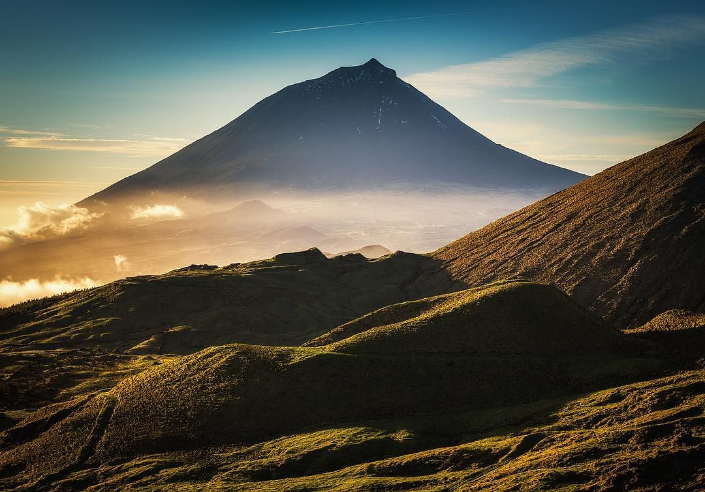
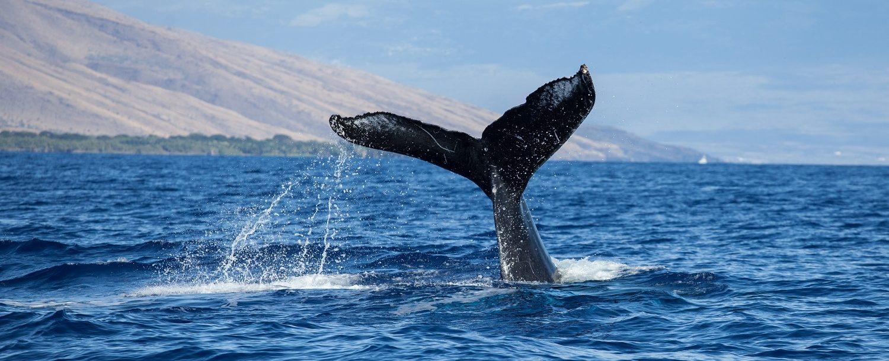
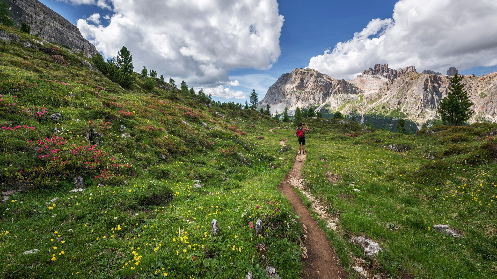

It's hard to resist Catan with its fresh sea breeze and picturesque landscapes. Unspoilt natural beauty, endless sandy beaches and charming pastures are all part of everyday life on Our beautiful island.
Our Home
-

Climbing
Come visit our mountains and you will discover the wonderful nature of our areas. There are wide valleys, majestic peaks steeped in charm surrounded by ancient forests. If you don’t have a head for heights, there’s a trail that loops around the mountains too.
-

Whale Watching
Whale watching is the extension of the whaling tradition of the island adapted to current times. The waters around Catan can be enjoyed by sailing or kayaking. A boat ride also offers views of the coastline, which is ideal for fishing from the rocks or diving.
-

Hiking
In Catan people have used footpaths in their daily life for centuries. Goods to be exchanged and people heading to festivities in neighboring villages have passed through them. This network of footpaths has been restored, allowing anyone to visit the most beautiful areas of the Island.
So much to offer
Travel Award
Having been named the No.1 sustainable tourism destination by Quality Coast, Catan bettered the Gold Award standard it achieved previously, becoming the first destination ever to achieve the Platinum Award standard.
Contact Us
Please Email us at catan.island@catan.org
We will be happy to answer any questions you may have.